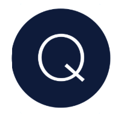
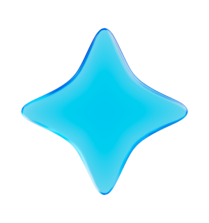
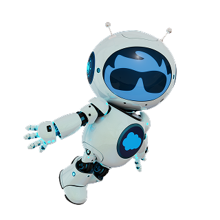
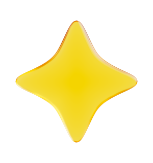

Q Branch LATAMThe Shared Brain

A four-layer Context Stack and a shared, version-controlled brain — so the lessons we fight for once stay learned, for the whole team.
Each layer answers a different question — so you never re-explain yourself, and Claude reads only what's relevant to the task at hand.
A few lines in your global ~/.claude/CLAUDE.md that make every session aware the procedure exists — gated to real project work, ignored for throwaway chats.
Per-project git history. Commit messages explain the why, not just the what — so the reasoning behind a change survives.
An append-only running narrative Claude maintains autonomously in each project — where we are, and the dead ends we already ruled out.
Durable, teachable, cross-project gotchas in topic-named guides. Read the INDEX.md first; open a guide only when its one-line trigger matches your task.

You gather fast and solo in your own private brain. The best, most teachable guides get promoted to the shared team brain — after an Opus review pass.
Your own repo. Run /capture after a session and it proposes a learning; you approve, it commits with a why-rich message. No friction, no review queue.
gitq-branch-latam/claude-brain. Promote a guide with /capture-to-team — an Opus pass checks it's clear, self-contained, accurate and durable before it lands.
INDEX.md, copy the guides you wantThree moves. That's the whole system.
It clones the team brain, wires the slash commands and a session-end nudge, installs Layer-0 awareness, and offers to scaffold your own private brain. It asks before touching anything and never assumes where your files live.
You are setting me up with the Q Branch LATAM "Context Stack" — a knowledge system so you stop forgetting hard-won lessons between sessions. Do this carefully, ask me before destructive steps, and NEVER hardcode another person's folder paths. Work through these phases: PHASE 0 — Orient - Confirm `gh auth status` shows me logged in to github.com. If not, tell me to run `gh auth login`. - Ask me ONE question: "Where do you want your brains to live?" Offer a sensible default (e.g. `~/claude-brains/`). Under that base I'll have two things: the TEAM brain (a clone) and MY OWN personal brain (new). Do not proceed until I confirm the base directory. PHASE 1 — Clone the team brain (shared, read-mostly) - Clone the public team repo into/q-branch-latam-brain: `gh repo clone q-branch-latam/claude-brain /q-branch-latam-brain` - Read its README.md and INDEX.md so you understand what's there. Summarize the available guides for me in 2-3 lines. This is the shared knowledge — I read it, and I copy guides I want into my personal brain. I do NOT edit it directly except via the /capture-to-team command. PHASE 2 — Wire the slash commands + hook (from the team clone) - Symlink the commands into ~/.claude/commands/ (create the dir if missing). Point them at the team clone's config/commands/ so they update when I `git pull`: ln -sf " /q-branch-latam-brain/config/commands/capture.md" ~/.claude/commands/capture.md ln -sf " /q-branch-latam-brain/config/commands/capture-to-team.md" ~/.claude/commands/capture-to-team.md ln -sf " /q-branch-latam-brain/config/commands/bootstrap-project.md" ~/.claude/commands/bootstrap-project.md - Install the session-end reminder hook. Copy ` /q-branch-latam-brain/config/hooks/session-end-capture.sh` to `~/.claude/hooks/claude-brain/session-end-capture.sh`, `chmod +x` it, then MERGE it into the "Stop" hooks array in ~/.claude/settings.json. CRITICAL: merge — read the existing JSON, append this one hook entry, write it back. Do NOT overwrite existing hooks. If ~/.claude/settings.json doesn't exist, create it with a minimal valid structure. Show me the before/after of the Stop array. PHASE 3 — Install Layer-0 awareness (global) - Ensure ~/.claude/CLAUDE.md exists. If it doesn't, create it from ` /q-branch-latam-brain/config/global-CLAUDE.md.tmpl`, replacing with ` /q-branch-latam-brain`. If it DOES exist, show me the template and ask whether to append the awareness block — never clobber my existing global file. PHASE 4 — Create MY personal brain (private, mine) - Tell me: the team brain is shared; my personal brain is where I gather MY learnings before (optionally) promoting the best ones to the team. Offer to scaffold it now at /my-brain by running the /bootstrap-project flow there, and to create it as a PRIVATE GitHub repo under my account. Ask before creating any remote repo. PHASE 5 — Teach me the loop - Print a short cheat-sheet: • /capture → save a learning to MY personal brain (approve before write). • /capture-to-team → promote one of my guides to the TEAM brain (Opus reviews it first). • To USE team knowledge: read /q-branch-latam-brain/INDEX.md, open the matching guide, copy what's relevant into my own brain. • /bootstrap-project → set up the Context Stack (git + build-log + CLAUDE.md) in any new project. - Confirm everything: list the symlinks created, the hook merge result, and both brain locations. Throughout: ask before creating remote repos or editing my global config. Report what you did.
Read INDEX.md first. Open a guide only when its one-line trigger matches. Token cost stays flat as the brain grows.
Every learning is proposed for approve / edit / reject before anything is committed. You stay in control.
Append to the closest existing guide instead of spawning duplicates. Edit in place when a lesson is superseded.
Guides record authored_with / last_verified_with; build-logs tag [model: …] — so you can judge how much to trust a note.
Org tables, profiles, machine paths stay local. Only durable, teachable gotchas reach the public team brain.